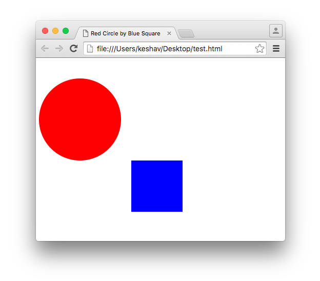
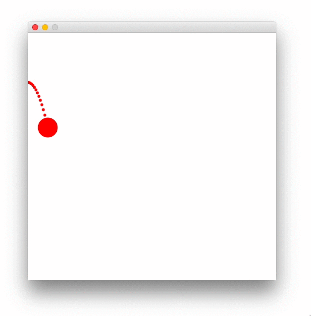
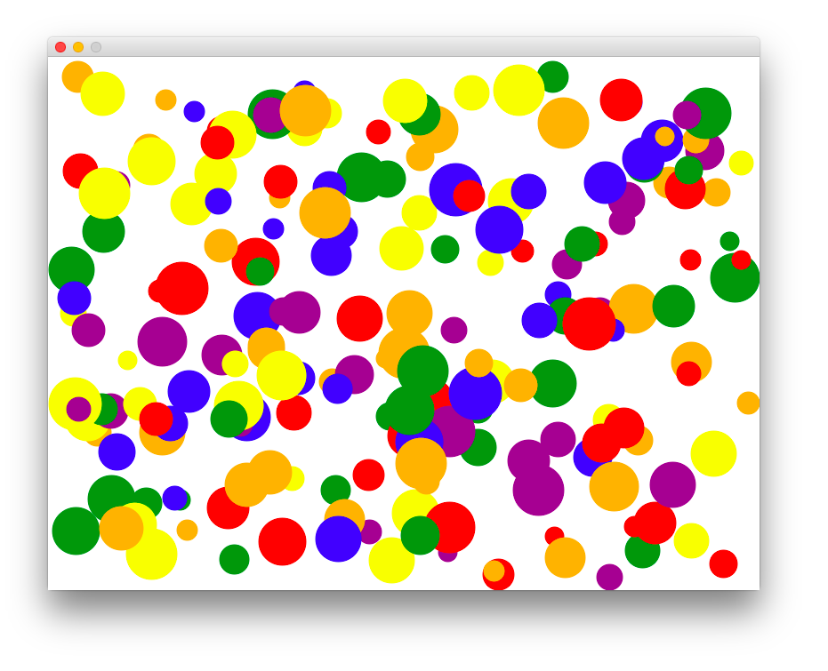
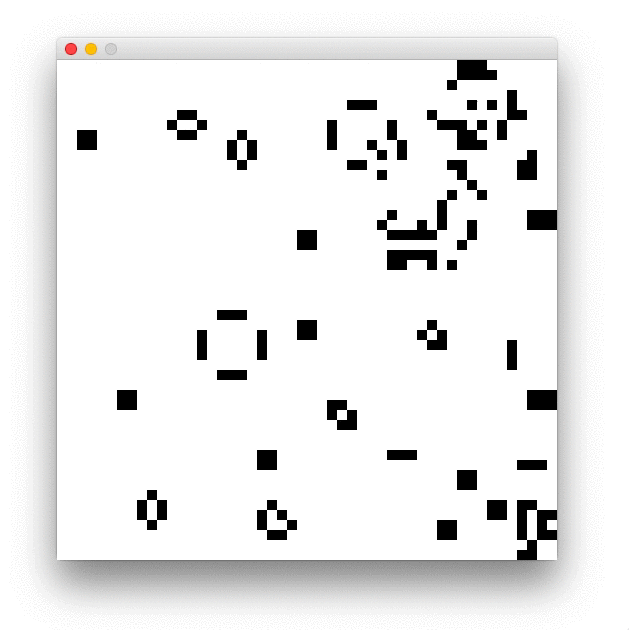
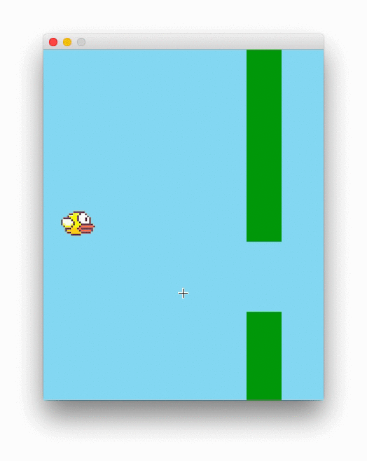
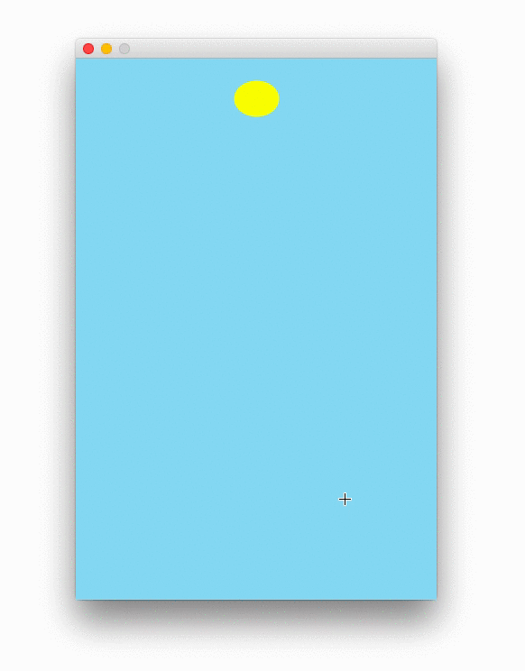
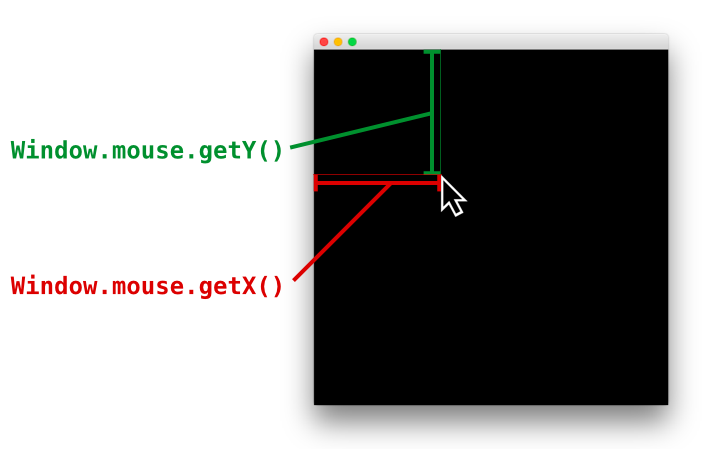

APCS graphics
APCS graphics is an open-source multi-language approach to learning and teaching All Principles of Computer Science. It was built by Keshav Saharia to teach introductory computer science at Techlab Education, and is now used by coding classrooms around the world.
It can be used in game development to teach computer science through animation and digital artwork, which is a fantastic medium for younger students. It is also great for quickly creating interactive visualizations and simulations.
The core APCS graphics libraries are hosted on GitHub. We encourage developers and educators to interact with us on GitHub and make contributions to this project!
Java: read the getting started guide to get Eclipse, Java 8, and the APCS graphics library set up on your computer.
JavaScript: add the JavaScript library to any HTML page.
Python: quickly get started with pythonroom.com, our web-based coding editor, or read the guide to get a Python editor and the APCS graphics package set up on your computer.
We welcome contributions to this project on GitHub.
Quickstart
<script src="http://apcs.io/js/apcs.js"></script>
You can quickly start using APCS graphics with JavaScript. Simply add the script tag for apcs.js into any webpage, or copy-and-paste the full HTML example into a .html file.
<html>
<head>
<title>Red Circle by Blue Square</title>
</head>
<body>
<script src="http://apcs.io/js/apcs.js"></script>
<script>
Window.size(500, 500);
Window.out.color("red");
Window.out.circle(100, 120, 80);
Window.out.color("blue");
Window.out.square(250, 250, 100);
</script>
</body>
</html>
Most JavaScript examples have a live preview button next to them. You can also write code on apcsroom.com, which makes it easy for anyone to learn and teach with APCS graphics.

Philosophy
Teaching computer science is much more engaging when it is done visually. However, each language has its own set of graphics functionality which is usually too complicated for a beginner to understand.
APCS graphics standardizes graphics functionality to static methods, so there are no mysterious classes to extend or boilerplate templates required. You can start from scratch and quickly put together a simulation of a bouncing ball, the viral game Flappy Bird, or a clone of agar.io.
Currently we support Java, Python, and JavaScript.
// A bouncing ball simulation
int x = 50, y = 50, dy = 0;
while (true) {
// Start one frame of the animation.
Window.frame();
// Draw the ball.
Window.out.background("white");
Window.out.color("red");
Window.out.circle(x, y, 20);
// Move the ball.
x = x + 3;
y = y + dy;
dy = dy + 1;
// Bounce the ball.
if (y > 480) {
y = 480;
dy = dy * -9 / 10;
}
}
var x = 50, y = 50, dy = 0;
// One frame of the animation.
Window.frame(function() {
// Draw the ball.
Window.out.background("white");
Window.out.color("red");
Window.out.circle(x, y, 20);
// Move the ball.
x = x + 3;
y = y + dy;
dy = dy + 1;
// Bounce the ball.
if (y > 480) {
y = 480;
dy = dy * -9 / 10;
}
});
x, y, dy = 50, 50, 0
# One frame of the animation
def main():
global x, y, dy
# Draw the ball
Window.out.background("white")
Window.out.color("red")
Window.out.circle(x, y, 20)
# Move the ball.
x = x + 3
y = y + dy
dy = dy + 1
# Bounce the ball if it hits the ground.
if y > 480:
y = 480;
dy = dy * -9 / 10;
Window.size(500, 500)
Window.frame(main)
Window.start()

Drawing
The functions for drawing ovals, rectangles, lines, polygons, and text are organized in the Window.out class. Calling any Window.out method will create a default window that is 500 x 500 pixels if the window is not already open.
Window.size
void Window.size(int width, int height)
Window.size(width, height)
Window.size(width, height)
The Window.size method sets the dimensions of the window.
Window.out.color
void Window.out.color(int r, int g, int b)
void Window.out.color(String color)
Window.out.color(r, g, b, alpha)
Window.out.color(colorString)
Window.out.color(r, g, b)
Window.out.color(colorString)
Sets the current drawing color to the given color, either as an RGB value, as a color hex code, or as a built-in color name. Any subsequent calls to a
Window.out function will use the given drawing color.
Window.out.background
void Window.out.background(String color)
void Window.out.background(int r, int g, int b)
Window.out.background(color)
Window.out.background(r, g, b)
Window.out.background(color)
Window.out.background(r, g, b)
Sets the background of the window to the color specified by the string name, hex code, or RGB value (this value is passed to Window.out.color).
Window.out.circle
void Window.out.circle(int x, int y, int radius)
void Window.out.circle(int x, int y, double radius)
Window.out.circle(x, y, radius)
Window.out.circle(x, y, radius)
Window.out.circle draws a circle centered at the position (x, y) with the given radius.
// A class to describe a single ball.
public class Ball {
int x, y, dx, dy;
public Ball() { ... }
public void draw() { ... }
public void move() { ... }
}
// Create a list of Ball objects.
Ball[] list = new Ball[100];
for (int i = 0 ; i < 100 ; i++) {
list[i] = new Ball();
}
while (true) {
Window.out.background("white");
// Draw and move each ball.
for (Ball b : list) {
b.draw();
b.move();
}
Window.frame();
}
// Describes a single ball object
function Ball() {
this.x = ...
this.y = ...
this.draw = function() { ... };
this.move = function() { ... };
}
// Create a list of Ball objects.
var list = [];
for (var i = 0 ; i < 100 ; i++) {
list.push(new Ball());
}
Window.frame(function() {
Window.out.background("white");
// Draw and move each ball.
for (var i = 0 ; i < list.length ; i++) {
list[i].draw();
list[i].move();
}
});
class Ball:
def __init__(self):
...
def draw():
...
def move():
...
balls = []
for i in range(100):
balls.append(Ball())
def draw():
Window.out.background("white")
for b in balls:
b.draw()
b.move()

Window.out.square
void Window.out.square(int x, int y, int length)
Window.out.square(x, y, length)
Window.out.square(x, y, length)
Window.out.square draws a square centered at the position (x, y) with the given side length.

Window.out.rectangle
void Window.out.rectangle(int x, int y, int width, int height)
Window.out.rectangle(x, y, width, height)
Window.out.rectangle(x, y, width, height)
Window.out.rectangle draws a rectangle centered at the position (x, y) with the given width and height.

Window.out.oval
Window.out.oval draws an oval centered at the position (x, y) with the given width and height.
Window.out.oval(x, y, width, height)

We start the Flappy Bird lab by drawing a simple oval to represent the bird, and first implementing the physics behind the bird’s motion.
Window.out.line
Window.out.line draws a line between the starting position (x1, y1) and the ending position (x2, y2).
Window.out.line(x1, y1, x2, y2)
Window.out.image
void Window.out.image(String image, int x ,int y)
Window.out.image(image, x, y)
Window.out.image draws the image located at the image string at the given (x, y) coordinate in the top left corner.
Mouse input
Window.mouse.getX
Returns the x position of the mouse.
int Window.mouse.getX()
int Window.mouse.getY()

Window.mouse.getY
int Window.mouse.getY()
Returns the y position of the mouse.
Window.mouse.clicked
boolean Window.mouse.clicked()
Returns true if the mouse is currently clicked, and false otherwise.
Keyboard input
Window.key.pressed
boolean Window.key.pressed(String key)
boolean Window.key.pressed(char key)
Returns true if the given key is pressed, and false otherwise.
Window.key.released
boolean Window.key.released(String key)
boolean Window.key.released(char key)
Returns true if the given key is not pressed, and false otherwise.
Animating
Animations are created by showing still images called frames in rapid succession. The movies you see in a theater have 24 frames per second - that is, every second your brain is seeing twenty-four slightly different images, and stitching them together to give the illusion of motion.
The easiest way to create animations with code is to endlessly loop a block of instructions that draws a single frame. Your computer can perform drawing instructions in less than a millisecond, so we need to insert a small pause between each repetition to give our brains enough time to process the frame.
The easiest way to insert that pause is with the Window.frame method, which can optionally take in the number of milliseconds to wait for. The default delay between frames is 33 milliseconds, to achieve a frame rate of around 30 frames per second (fps).
Window.frame()
Window.frame(milliseconds)
Window.sleep
You can insert a manual delay into the program with Window.sleep which takes an integer number of milliseconds to wait for.
Window.sleep( milliseconds )
Window.frame
The Window.frame method starts double buffering the window. After the first call to Window.frame, the visual state of the window is frozen, and all subsequent drawing commands are performed on a background window that is not shown. Once the Window.frame method is called again, the background window’s contents are copied and frozen on the visible window, and all subsequent drawings are again done on the background. This process eliminates flicker by ensuring a frame is fully rendered before displaying it on the screen, and adjusts the delay time between frames by the time taken to render the frame.
// Setup...
while (true) {
// Draw one frame...
Window.frame();
}
Customizing
These methods change properties of APCS graphics or extend the functionality of other Window methods.
Window.setFrameRate
You can set the frame rate (the number of frames displayed each second) with the Window.setFrameRate method. Setting the frame rate will automatically calculate the number of milliseconds to wait when Window.frame is called with no arguments.
Window.setFrameRate(rate)
Window.addImage
void Window.addImage(String url)
void Window.addImage(String image, String imageName)
Creates an alias for the given
Window.addImages
void Window.addFolder(String path)
When used with a directory name, adds the given folder to the file path searched for images.
Window.addKey
Window.addKey(String key, int keyCode)
Window.addKey(String key, String equivalent)
Creates a mapping from the given string key to an integer key code or alternate string key.
Window.addColor
Built-in color strings can be defined with Window.addColor. This creates a mapping from the color name to the given hex code or RGB value.
void Window.addColor(String color, int r, int g, int b)
void Window.addColor(String color, String hex)
Window.out.addColor(color, r, g, b, a)
Window.out.addColor(color, hex)
Window.out.addColor(color, r, g, b, a)
Window.out.addColor(color, hex)
© Techlab Education, 2017. All Rights Reserved.